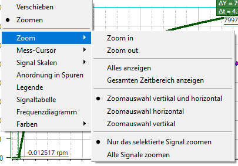

Die Menüpunkte "Verschieben" (Ansicht ziehen) und "Zoomen" auf der Hauptebene des Kontextmenüs schließen sich gegenseitig aus.
Wenn "Verschieben" ausgewählt ist, ist der Basis-Mauszeiger eine Hand. Klicken Sie mit dem Handcursor auf einen leeren Hintergrundbereich und ziehen Sie diesen mit gedrückter linker Maustaste: Verschieben des gesamten Trace-Diagramms in Ziehrichtung.
Wenn "Zoomen" ausgewählt ist, ist der Basis-Mauszeiger ein Pfeil. Betätigen Sie in einem leeren Hintergrundbereich die linke Maustaste und ziehen Sie diesen mit gedrückter linker Maustaste: Aufziehen eines "Rechtecks". Beim Loslassen der Maustaste wird das Diagramm auf den Bereich innerhalb des "Rechtecks" verkleinert.
In beiden Modi "Verschieben" und "Zoomen": Klicken Sie mit dem Handcursor auf eine Signallinie und ziehen Sie diese mit gedrückter linker Maustaste: Individuelles Verschieben der Signallinie. Die anderen Signale werden nicht verschoben und das aktive Signal wird nicht geändert.
Das Untermenü "Zoomen" enthält folgende Befehle:
Hinein- bzw. Herauszoomen (gleicher Effekt wie Tastenkombinationen <STRG++> und <STRG+->).
Alle anzeigen (gleicher Effekt wie Tastenkombination <STRG+0>).
Gesamtzeitbereich anzeigen:
Zoomen Sie das Diagramm horizontal, sodass der gesamte Messzeitbereich sichtbar ist, ohne den vertikalen sichtbaren Bereich zu ändern. Dies ist das Gleiche wie die Auswahl von "Zoomauswahl horizontal" und dann der Option "Alle Signale anzeigen".
Zoom-Richtung:
Die drei Optionen horizontal, vertikal oder beide schließen sich gegenseitig aus. Zoom-Aktionen werden nur in der ausgewählten Richtung durchgeführt. Genauso wie über die Symbole für die Zoom-Richtung in der Symbolleiste.
Wenn der horizontale Zoom ausgewählt ist, wird die Option "Nur das selektierte Signal zoomen" automatisch deaktiviert, da die horizontale Achse bei allen Signalen die gleiche ist.
Nur das selektierte Signal (die ausgewählte Signalgruppe) zoomen oder alle Signale zoomen:
Diese beiden Optionen schließen sich gegenseitig aus. Alle Zoomaktionen betreffen nur das ausgewählte Signal (die ausgewählte Signalgruppe) oder alle Signale.